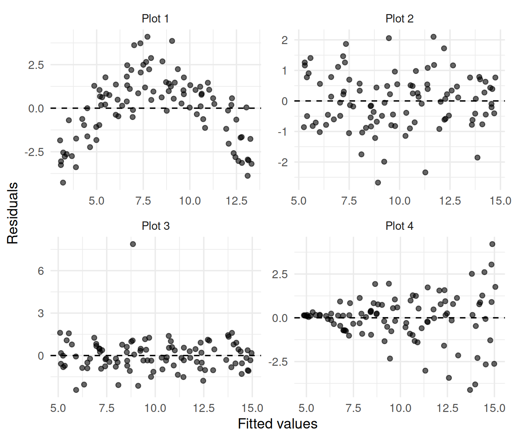

library(tidyverse)
library(usdata)
theme_set(theme_minimal(base_size = 14))
data(county_complete)
county_health <- county_complete |>
select(
state, name, fips, pop = pop_2019, uninsured = uninsured_2019,
poverty = poverty_2019, median_income = median_household_income_2019,
per_capita_income = per_capita_income_2019,
unemployment = unemployment_rate_2019, bachelors = bachelors_2019,
hs_grad = hs_grad_2019, median_age = median_age_2019,
broadband = household_has_broadband_2019, density = density_2010
) |>
as_tibble()Lab 6: Reading the Residuals
Week 6, Regression I, Fall 2026
Download this lab as a .qmd file and open it in RStudio; this web page is just a preview.
Render, then upload both your .qmd and the rendered .html to Brightspace by 11:59 PM tonight. Completion-graded.
Run this setup chunk first (it rebuilds county_health exactly as in Lab 5). You will also need the car package installed (install.packages("car") once, if you do not have it).
Part A: Pattern recognition (11:40-12:10)
A1. The drill: four plots, four diagnoses
Run this chunk as-is. It simulates four datasets (I know the truth because the code writes it), fits a straight line to each, and shows the four residual plots.
set.seed(2026)
n <- 100
x <- runif(n, 0, 10)
drill <- bind_rows(
tibble(plot = "Plot 1", x = x, y = 5 + x - 0.2 * (x - 5)^2 + rnorm(n, sd = 1)),
tibble(plot = "Plot 2", x = x, y = 5 + x + rnorm(n, sd = 1)),
tibble(plot = "Plot 3", x = x, y = 5 + x + c(rnorm(n - 1, sd = 1), 8)),
tibble(plot = "Plot 4", x = x, y = 5 + x + rnorm(n, sd = 0.22 * x))
)
drill_resid <- drill |>
group_by(plot) |>
mutate(fitted = fitted(lm(y ~ x)), resid = resid(lm(y ~ x))) |>
ungroup()
ggplot(drill_resid, aes(fitted, resid)) +
geom_point(alpha = 0.6) +
geom_hline(yintercept = 0, linetype = 2) +
facet_wrap(~plot, scales = "free") +
labs(x = "Fitted values", y = "Residuals")
Match each plot to exactly one pathology from this list: healthy (no visible problem), nonlinearity (curve), nonconstant variance (fan), single outlier. For each, one sentence on what visual feature gave it away.
- Plot 1: …
- Plot 2: …
- Plot 3: …
- Plot 4: …
Check yourself: peek at the simulation code. Which line of the bind_rows() call creates each pathology? …
A2. Now a real one: uninsured vs poverty
Fit the model and make the workhorse plot. (lm() drops counties with missing values automatically; poverty is missing for many counties, so expect n around 1,266.)
fit_pov <- lm(uninsured ~ poverty, data = county_health)
county_pov <- county_health |>
drop_na(uninsured, poverty) |>
mutate(fitted = fitted(fit_pov), resid = ___)
ggplot(county_pov, aes(x = ___, y = resid)) +
geom_point(alpha = 0.4) +
geom_hline(yintercept = 0, linetype = 2) +
labs(x = "Fitted values", y = "Residuals")Which of the four drill patterns does this plot most resemble? Point to the specific feature (where is the spread widest?). …
A3. Residuals vs the predictor, plus the formal test
ggplot(county_pov, aes(x = ___, y = resid)) +
geom_point(alpha = 0.4) +
geom_hline(yintercept = 0, linetype = 2) +
labs(x = "Poverty rate (%)", y = "Residuals")
car::ncvTest(fit_pov)Does the test agree with your eyes? In one sentence, why should the plot, not the p-value, get the final word at n = 1,266? …
A4. Consequences
Given what you found, which numbers from a summary(fit_pov) and predict(..., interval = "prediction") call would you distrust, and which survive? (Hint: deck A ranked the assumptions.) …
Part B: Two flawed models (12:50-13:25, in pairs)
You are handed two county models that each hide a different pathology. For each model: (1) make the diagnostic plots, (2) name the problem, (3) propose a fix from today’s toolbox, (4) try it, and (5) report before vs after in 2-3 sentences.
B1. Model 1: broadband ~ density
d1 <- county_health |>
drop_na(broadband, density) |>
filter(density > 0) # one county reports density 0; log needs positives
m1 <- lm(broadband ~ density, data = d1)Diagnose (plots of your choice; a scatterplot of the raw variables is fair game too):
# your diagnostics hereThe problem: …
Fix it (hint: look at a histogram of density before choosing):
# your fix hereBefore vs after (2-3 sentences, include R-squared for both fits): …
B2. Model 2: median_income ~ bachelors
d2 <- county_health |> drop_na(median_income, bachelors)
m2 <- lm(median_income ~ bachelors, data = d2)Diagnose:
# your diagnostics hereThe problem: …
Fix it (hint: incomes are strictly positive and right-skewed; which transformation from the shelf is built for that?):
# your fix hereBefore vs after (2-3 sentences; include car::ncvTest() for both fits and say in words what changed): …
B3. Pair finding
Our 2-3 sentence finding for the debrief (which model was sicker, what fixed it, and what the fix cost in interpretability): …
B4. Exit ticket
Muddiest point from today: …